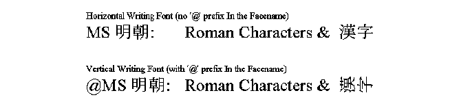
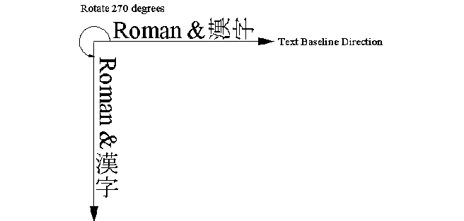

Vertical Writing Support
In Far Eastern countries, vertical writing (writing text from top to bottom)
support is required. Although horizontal writing (writing text from left
to right) is becoming more common in these countries, still vertical writing
text is widely used. This section describes how the Open32 NLS Extension
supports vertical writing.
Vertical Writing in Windows
In the Windows platforms, the vertical writing font is identified by prefix '@' in the facename. In Windows vertical writing font, all double byte ideographs are in advance rotated 90 degrees counterclockwise. The figure shown below outlines the example of vertical writing font ("@MS Mincho" for Japanese). 
To print the text vertically, application selects a vertical writing font
simply by adding facename prefix '@' in the logical font, with setting Escapement
attribute to 270 degrees to adjust text baseline direction from top to bottom.
See figure shown below.
Vertical Writing Font
In OS/2, the Windows compatible vertical writing font is provided by OS/2 TrueType font driver, which dynamically generates vertical writing font from horizontal writing font, if the font contains ideographs. Because of this, the Windows compatible vertical writing fonts are available only when DBCS TrueType fonts are installed in the system.
There is another kind of vertical writing font that have been used in OS/2. This vertical writing font is in Postscript convention, in which all single byte characters and ideographs are not rotated but contains some special vertical glyphs (e.g., punctuation characters) for vertical writing. The facename conventions of this kind of fonts are:
Facename-V
Facename-V-some
The Postscript vertical writing fonts are expected to be used, by placing the individual characters vertically under the control of applications, but they are not compatible with Windows applications. The Open32 NLS Extension manages these fonts just as one variation of horizontal writing fonts. The only exception is in ChooseFont.
When CF_NOVERTFONT option (to exclude vertical writing fonts from the list) is specified to ChooseFont function, the Open32 NLS Extension excludes both Windows vertical writing fonts and Postscript vertical writing fonts from the list.
@Facename (Windows convention)
Facename-V (Postscript convention)
Facename-V-some (Postscript convention)
In Windows platforms, the text baseline direction (Escapement) is one of attributes associated to a font. In OS/2 environment, the text baseline direction is one of attributes associated to a device context (or Presentation Space), known as CharAngle. To emulate Windows convention, the Open32 NLS Extension will change the text baseline direction, with the GpiSetCharAngle function, whenever a logical font is realized and selected into device context.
There is another font attribute, Orientation, which is used to rotate individual characters at each character reference point. In the original Win32 specification, the characters are not rotated even if the baseline direction is rotated by the Escapement. To rotate characters as expected, the Orientation attribute should be set correctly. To tell truth, the Orientation is implemented only in the Windows NT GDI. The Windows 95 GDI ignores the Orientation, and uses Escapement also for rotating individual characters. The Open32 NLS Extension also ignores this Orientation attribute in the logical font.